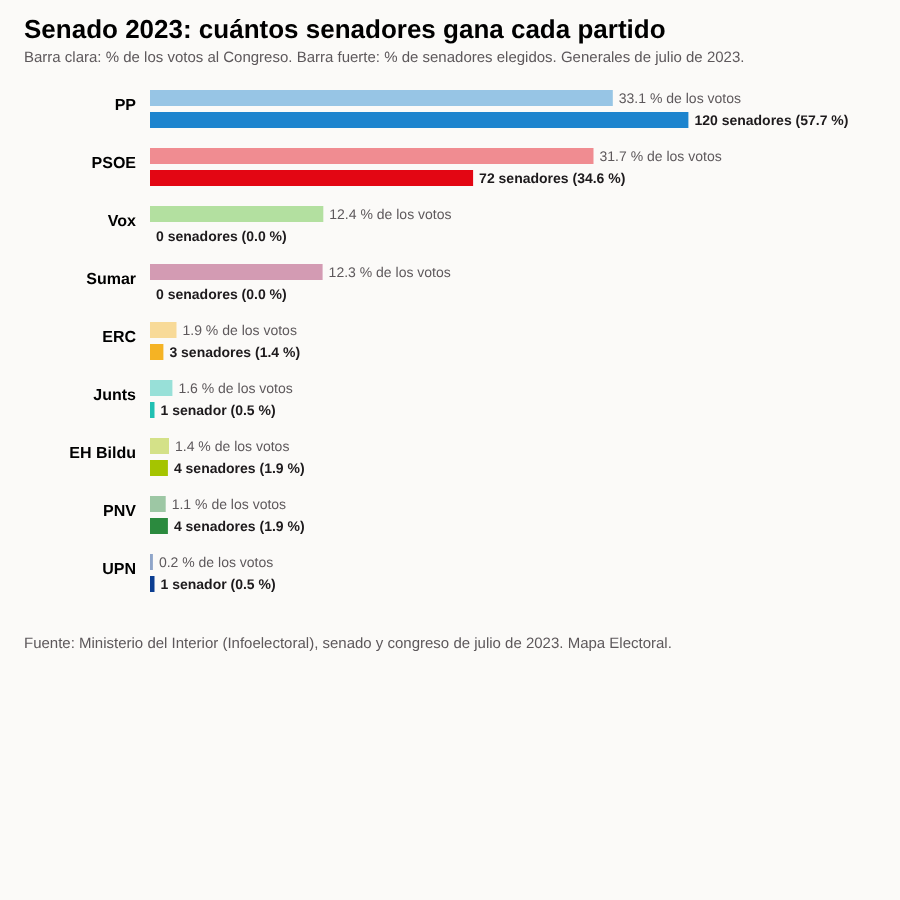

Actualidad · Tres votos, un escaño · España
Por Nacho G. del Álamo · · Actualizado el

El Senado de 2023: 120 senadores para el PP con un tercio de los votos
Con el voto limitado, el PP ganó 57,7 % de los 208 escaños con un 33,1 % del voto al Congreso. Vox y Sumar, con más del 12 % cada uno, no ganaron ninguno.
En julio de 2023 se eligieron 208 senadores. Cada provincia elige cuatro, salvo las insulares, Ceuta y Melilla. El artículo 69.2 de la Constitución dice que «en cada provincia se elegirán cuatro Senadores por sufragio universal, libre, igual, directo y secreto».
El voto no es completo. El artículo 166 de la Ley Orgánica del Régimen Electoral General dice que «los electores pueden dar su voto a un máximo de tres candidatos en las circunscripciones provinciales». Eso permite votar a candidatos de distintos partidos. En las 47 circunscripciones de cuatro escaños, la media fue de 2,9 marcas por papeleta.
En 43 de las 47 circunscripciones de cuatro escaños, un partido se llevó tres escaños y otro, uno. Solo en Badajoz, Cáceres, Huelva y València el reparto fue 2 a 2 entre PP y PSOE.
Dentro de cada lista, los votos bajan siempre del primer candidato al último. Los candidatos del mismo partido no reciben el mismo apoyo, y el orden de la papeleta no es el alfabético en la mayoría de las listas.
Método y fuentes
- Qué se compara
- El porcentaje de voto al Congreso y el de senadores por partido en las elecciones de julio de 2023, y el reparto por circunscripción (provincias de cuatro escaños, insulares, Ceuta y Melilla).
- Límites
- El Senado no es proporcional por diseño: cada provincia elige cuatro senadores con voto limitado, de modo que el peso del voto en el Congreso y en el Senado no es el mismo. Los datos son los de la elección de julio de 2023; la del 29N no cambia esas reglas.
- Cómo se calcula
- Porcentajes sobre votos a candidaturas, salvo la participación, que es sobre el censo. Cifras reproducibles con los scripts del expediente de la pieza. Metodología de Actualidad · Metodología del Atlas
- Fuentes
- Autoría
- Nacho G. del Álamo
- Revisión de datos y texto
- Nacho G. del Álamo, 20 de octubre de 2026
- Publicado · actualizado
- 20 de octubre de 2026 · 23 de octubre de 2026, a las 23.15
- Correcciones
- Ninguna.
Serie «Camino al 29N»: 94 piezas
- Madrid llega al 29N teñida de azul: el PP ganó en 1.603 de sus 2.450 secciones y el PSOE solo resiste en cuatro distritos del sur
- Barcelona pasó del amarillo al rojo: ERC ganó en 563 secciones en 2019 y en ninguna en 2023
- València borró a Compromís del mapa: ganaba en 101 secciones en 2019 y en 15 en 2023
- Sevilla tiene dos mapas: el PP ganó en votos el 23J, pero el PSOE fue el primero en 286 de sus 521 secciones
- Zaragoza, empate barrio a barrio: el PSOE ganó en 250 secciones y el PP en 245, y 53 se decidieron por menos de dos puntos
- En Málaga, la renta decide quién vota: el 46,7% en los barrios más pobres y el 80,6% en los más ricos
- Murcia, de verde a azul: Vox ganó en 164 secciones en 2019 y en una en 2023
- Palma, la gran ciudad que menos vota: el 62,5% en 2023, y menos del 35% en algunas secciones del este
- Montse Mínguez dimite y deja la lista de Lleida: el PSC duplicó allí su voto en 2023 y le ganó el cuarto diputado al PP por unos 3.500 votos
- El Rey visita las dos ciudades que menos votan: en Melilla votó el 49,8% en 2023, y en una sección de la periferia, el 19%
- Estás aquíEl Senado de 2023: 120 senadores para el PP con un tercio de los votos
- Un diputado cuesta 25.300 votos en Teruel y 97.500 en Madrid: el precio del escaño, provincia a provincia
- 1,9 millones de votos no eligieron a nadie en 2023: en Teruel, Lleida y Soria, uno de cada tres
- Feijóo y Sánchez chocan por las pensiones en un censo con 10,2 millones de electores de 65 años o más: superan a los de 18 a 34 en 49 de las 52 provincias
- El CIS de Tezanos da al PSOE 11,8 puntos de ventaja: en las tres generales desde 2019 sobrestimó su margen sobre el PP entre 1 y 6,9 puntos
- Rufián admite «He fracasado»: con los votos de 2023, ERC y Sumar juntos habrían sacado un solo diputado más en Cataluña, y por 126 votos
- Ocupación: en las provincias con más demandas ante los juzgados, Vox sacó el 15,9% en 2023, frente al 11,5% en las que menos
- Frente Amplio y Podemos solo irán juntos en cinco provincias: en las otras 47, Sumar sacó 26 de sus 31 diputados en 2023
- El voto de fuera, el del «pucherazo», le dio un escaño al PP en 2023
- PSOE y Frente Amplio, juntos al Senado: con los votos de 2023, su lista habría ganado al PP en 17 provincias donde este sacó tres senadores
- Ver las 94 piezas de la serie
Más datos: elecciones generales del 29N de 2026: fecha y escaños por provincia · más piezas sobre escaños y sistema electoral.
Sigue leyendo
- EncuestasEncuestas de las elecciones generales del 29N: todas, con sus escaños, actualizadas cada día
- PactosSimulador de pactos del 29N: ¿quién puede gobernar? Decide qué vota cada partido
- Israel, las cuentas del 61Netanyahu se queda a cuatro escaños de la mayoría con el 40% escrutado, y la oposición solo llega a 61 con los partidos árabes
- Serbia, distrito a distritoVučić ganó en los 25 distritos de Serbia en 2023; los estudiantes le han ganado en 18 y en Zaječar el recuento va por 31 votos
- Brasil, estado a estadoLula pasó de perder por 2,2 millones de votos a ganar por 4,4: en el mapa de Brasil solo Minas Gerais cambió de color
- ActualidadTodas las piezas de actualidad
- AtlasAtlas de las anomalías electorales